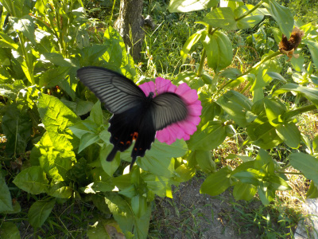
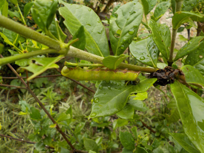
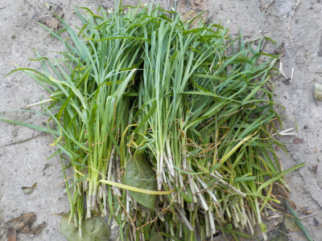
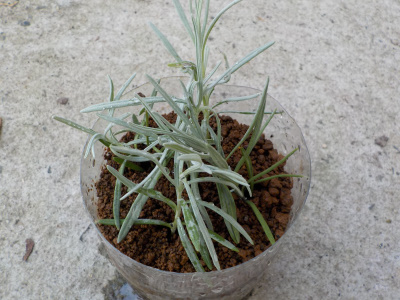
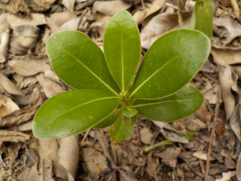
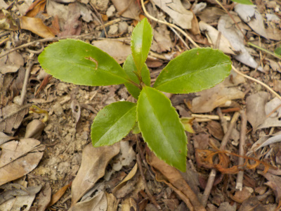
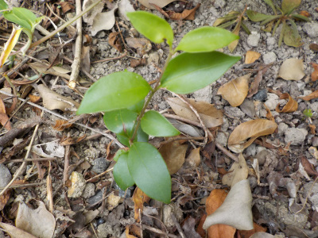
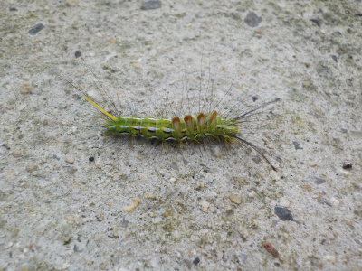

遊びで植物を育てよう
2020/08/30
近頃大きめの蝶をよく見ます。

アゲハ蝶サイズの蝶がよく飛んでいます。
幼虫は葉っぱを食べて嫌ですが、成虫は綺麗でいいですね。
蝶って花の近くにいる時は動きがゆっくりなので、網があればすぐに捕まえれそうだと思いました。
捕まえてもしょうがないですが。
【ページTOP】
【8月TOP】
【園芸TOP】
2020/08/23
クチナシにいたアオムシを4匹取りました。

大きい青虫がクチナシの上にいて、目立ったので取りました。
たぶんオオスカシバの幼虫。
成虫が飛んでる姿はかわいいで見たいですが、クチナシの葉っぱを大量に食べられるのは困ります。
【ページTOP】
【8月TOP】
【園芸TOP】
2020/08/16
何だかわからない植物を植えました。

庭にしょろひょろした植物が生えていたので、邪魔なので引っこ抜きました。
抜いたら根っこが少なかったので、鉢に植えても育つかな思いやってみました。
土が少ないので大きくはならないとは思いますが、どうなるでしょうね。
草で寒くなったら枯れるのかな？木で何年も育つのかな？
【ページTOP】
【8月TOP】
【園芸TOP】
2020/08/16
今日一番の作業はこのニラです。

ニラを大量に収穫しました。
虫食いとか枯れた葉っぱを取り除いて、花芽も捨てて、洗って、カットして冷凍庫へしまいます。
手間暇かかるので何日か作業します。
【ページTOP】
【8月TOP】
【園芸TOP】
2020/08/13
ラベンダーは線香の匂いになりました。

今日は色々挿し木したので、ついでにラベンダーも挿し木しました。
葉っぱの香りを嗅いだんですが、以前だとラベンダーの花を思い浮かべたんですが、今日は線香が思い浮かびました。
感覚が変わったんだな。
【ページTOP】
【8月TOP】
【園芸TOP】
2020/08/09
庭で誕生した木の苗を育てることにしました。



庭木の種が落ちて育った苗です。
何て名前の木かは調べていません。
鉢で育てて盆栽っぽくしようかと思っています。
【ページTOP】
【8月TOP】
【園芸TOP】
2020/08/01
木の上から毛虫が落ちてきました。

ぽとっと落ちてきました。
トゲがあるので毒がありそうです。
調べたらスギドクガって名前でした。名前はドクガですが、毒はないそうです。
あんまり気にしなくてもいいのかな？
【ページTOP】
【8月TOP】
【園芸TOP】
過去の日記
【2024年8月の日記】
【2023年8月の日記】
【2022年8月の日記】
【2021年8月の日記】
【2020年8月の日記】
【2019年8月の日記】
【2018年8月の日記】
【2017年8月の日記】
【2016年8月の日記】
【2015年8月の日記】
【2014年8月の日記】
【2013年8月の日記】
【2012年8月の日記】
【ページTOP】
【8月TOP】
【園芸TOP】
夏場の活動は朝と夕です。
【おいしいものを食べよう。】【しっかり寝よう。】
【ソロ活をしよう!】【季節感のあることをしよう。】【動画視聴はほどほどに。】【当サイトの全てのコンテンツは無断転載禁止です。】